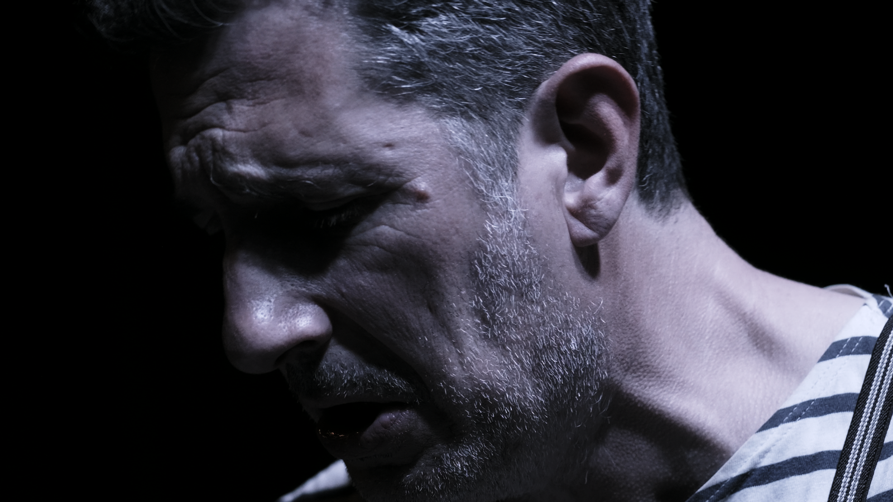

L’artiste
Arnaud Subra
Auteur-compositeur-interprète · pianiste · chanteur
Un parcours où la musique rencontre le théâtre et l’écriture, aujourd’hui réuni au sein de la Compagnie La Crouzille, à La Réole.

Du piano à la scène
Arnaud Subra pratique le piano depuis l’enfance. Après une formation classique, il poursuit son apprentissage en jazz, harmonie et voix, puis se forme à l’art dramatique à l’école Lecoq.
Depuis 2006, il développe un parcours de scène au sein de différents projets et compagnies, dont La Sortie des Artistes et la Compagnie du Si, avant de fonder et diriger artistiquement la Compagnie des Saltimbanques. Il crée et interprète des formes mêlant musique, théâtre et écriture, et travaille également pour l’audiovisuel.
Une écriture en mouvement
Son travail d’auteur traverse chansons, poésie, nouvelles et scénarios. Journal d’un épouvantail paraît aux éditions du Serpolet en 2011.
Le texte, la voix et la présence scénique se répondent dans ces différentes formes. Avec Carnet de notes, ce parcours revient à une relation directe avec le public.
Carnet de notes, un piano et une voix
Seul en scène, Arnaud Subra interprète ses chansons dans un récital piano-voix où le souvenir, l’absence et la recherche d’un lien avec le public traversent l’écriture.
La forme est légère et adaptable : un piano, une voix, une lumière douce. La proximité et la qualité d’écoute donnent au texte sa place.
La Crouzille, la compagnie actuelle
Fondée à La Réole en juin 2026, la Compagnie La Crouzille rassemble cette expérience de la scène, de la composition, de l’écriture et de la direction de projets. Elle développe des créations autour de la mémoire, du déplacement, de la métamorphose et de la relation.